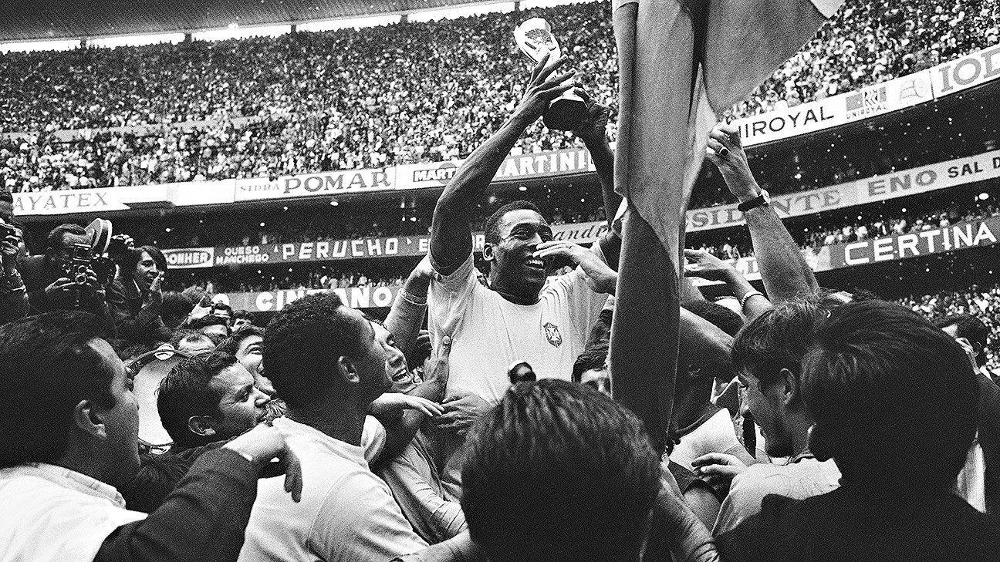

The National Career and World Cup
Pelé's first international match was a 2–1 defeat against Argentina on 7 July 1957 at the Maracanã. In that match, he scored his first goal for Brazil aged 16 years and nine months, and he remains the youngest goalscorer for his country.
Pelé arrived in Sweden sidelined by a knee injury but on his return from the treatment room, his colleagues stood together and insisted upon his selection. His first match was against the USSR in the third match of the first round of the 1958 FIFA World Cup, where he gave the assist to Vavá's second goal. He was at the time the youngest player ever to participate in the World Cup. Against France in the semi-final, Brazil was leading 2–1 at halftime, and then Pelé scored a hat-trick, becoming the youngest in World Cup history to do so.
On 29 June 1958, Pelé became the youngest player to play in a World Cup final match at 17 years and 249 days. He scored two goals in that final as Brazil beat Sweden 5–2 in Stockholm, the capital. Pelé hit the post and then Vavá scored two goals to give Brazil the lead. It was in the 1958 World Cup that Pelé began wearing a jersey with number 10. The event was the result of disorganization: the leaders of the Brazilian Federation did not allocate the shirt numbers of players and it was up to FIFA to choose the number 10 shirt for Pelé who was a substitute on the occasion.
South American Championship
Pelé also played in the South American Championship. In the 1959 competition he was named best player of the tournament and was top scorer with 8 goals, as Brazil came second despite being unbeaten in the tournament. He scored in five of Brazil's six games, including two goals against Chile and a hat-trick against Paraguay.
Pelé was called to the national team in early 1969, he refused at first, but then accepted and played in six World Cup qualifying matches, scoring six goals.[78] The 1970 World Cup in Mexico was expected to be Pelé's last. Brazil's squad for the tournament featured major changes in relation to the 1966 squad. Players like Garrincha, Nilton Santos, Valdir Pereira, Djalma Santos and Gilmar had already retired. However, Brazil's 1970 World Cup squad, which included players like Pelé, Rivelino, Jairzinho, Gérson, Carlos Alberto Torres, Tostão and Clodoaldo, is often considered to be the greatest football team in history.
1970 World Cup
Brazil played Italy in the final at the Azteca Stadium in Mexico City. Pelé scored the opening goal with a header after outjumping Italian defender Tarcisio Burgnich. Brazil's 100th World Cup goal, Pelé's leap of joy into the arms of teammate Jairzinho in celebrating the goal is regarded as one of the most iconic moments in World Cup history. He then made assists for Brazil's third goal, scored by Jairzinho, and the fourth finished by Carlos Alberto. The last goal of the game is often considered the greatest team goal of all time because it involved all but two of the team's outfield players. The play culminated after Pelé made a blind pass that went into Carlos Alberto's running trajectory. He came running from behind and struck the ball to score. Brazil won the match 4–1, keeping the Jules Rimet Trophy indefinitely, and Pelé received the Golden Ball as player of the tournament.Burgnich, who marked Pelé during the final, was quoted saying "I told myself before the game, he's made of skin and bones just like everyone else – but I was wrong". In terms of his goals and assist throughout the 1970 World Cup, Pelé was directly responsible for 53% of Brazil's goals throughout the tournament.

Pelé's last international match was on 18 July 1971 against Yugoslavia in Rio de Janeiro. With Pelé on the field, the Brazilian team's record was 67 wins, 14 draws and 11 losses. Brazil never lost a match while fielding both Pelé and Garrincha.
Summary of PELE gOOAAls
| Team | Matches | Goals |
|---|---|---|
| Santos | 660 | 643 |
| NY Cosmos | 64 | 37 |
| Brazil | 92 | 77 |
| Military | 4 | 4 |
| Selection SP | 15 | 12 |
| Other | 5 | 2 |